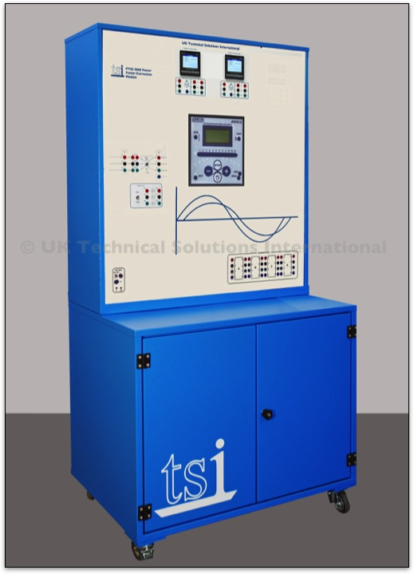

TSI-PTSS 5060 Power Factor Correction Module
This module has been designed to allow the user to assemble automatic power correction circuits with different capacitive steps managed by an electronic power factor control unit.
The module is equipped with two digital multifunction 3-phase instruments for measuring voltage, current, active power, reactive power, power factor and harmonics. These units have both numerical and graphical display facilities and can be used for both single and three-phase measurements.
It is intended for use with the PTSS System and can be used in combination with various units for a wide range of practical experiments.
The panel includes an automatic microprocessor power factor controller with a rated voltage of 380 - 415 V – 50/60 Hz. It has an ammeter current input with a forward current of up to 5 A (sensitivity range 0, 125 - 6 A).
The power factor range is: 0.8 inductive - 0.8 capacitive, with reconnection times of between 5s and 240s. It has a sensitivity range of 5s to 600s/step.
Connections are via 5 relay outputs with contacts rated at 5 A – 250 Vac. The setting parameters can be accessed manually from the display-assisted keyboard.
The panel also includes:
- 1 x four-pole rotary switch of operation - 16 A - 400 V
- 1 x noise suppression filter for three-phase line with neutral conductors - Vn 440 V; In 10 A; inductance of 0.4mH, current-carrying capacity of 0.1 μF
- 3 x three-pole contactors for power factor correction – Ith (AC1) 25A (7.5 kvar at 400 V) with transient limiting devices at the connection, excitation - 24 Vac at 50/60 Hz
- 1 x 1-phase transformer with a primary winding of 230 - 400 V and a secondary winding of 24 V. It has a power output of power of 72 VA
- 1 x bank of 3-phase capacitors of 450 V~ switchable between 2 and 4 μF with linked discharging resistors of 100 kΩ - 5 W
- 1 x bank of 3-phase capacitors of 450 V~ switchable between 4 and 8 μF with linked discharging resistors of 50 kΩ - 10 W
- 1 x bank of 3-phase capacitors of 450 V~ switchable between 8 and 16 μF with linked discharging resistors of 50 kΩ - 10 W
All the banks of capacitors can be connected in 1-phase or 3-phase star-delta configuration. This allows the user to assemble automatic power factor correction systems with up to 3 equal steps (4+4+4 μF), up to 3 unequal steps (one double the value of the other, i.e. 2, 4, 8 μF, or of 4, 8, 16 μF).
Connecting the additional banks in parallel will allow for further combinations.
The power factor controller can also be connected to a PC using the supplied cable and software. This will enable the setting and simultaneous display of all the system measurements:
- Current power factor
- Set power factor
- Weekly average power factor
- Voltage
- Current,
- Reactive power of the system
This provides a complete picture of the power factor correction system. In addition, the elapsed time and the number of tripping operations generated by the settings of the system are indicated for each step. This provides preliminary service information for the contactors in the system.